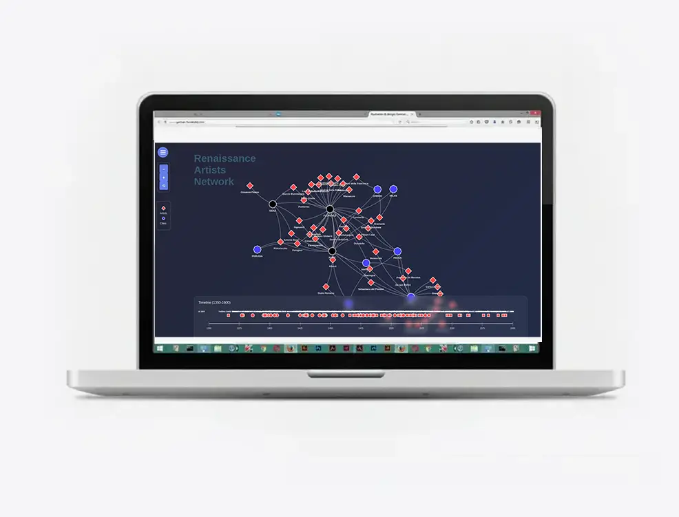
german fernandez portfolio
Welcome. I am German Fernandez Cantos, a Peruvian artist and designer who works mainly
in the field of information design (infographics, ux/ui) and illustration (digital and analogue) and editorial design (books, reports). This is my portfolio website./
We transform complex data into visually engaging infographics.
From captivating visual stories to precise statistical charts, I tailor solutions that
clarify and communicate your message with precision, ensuring information is both understandable and memorable.
You can find examples of this here
and here
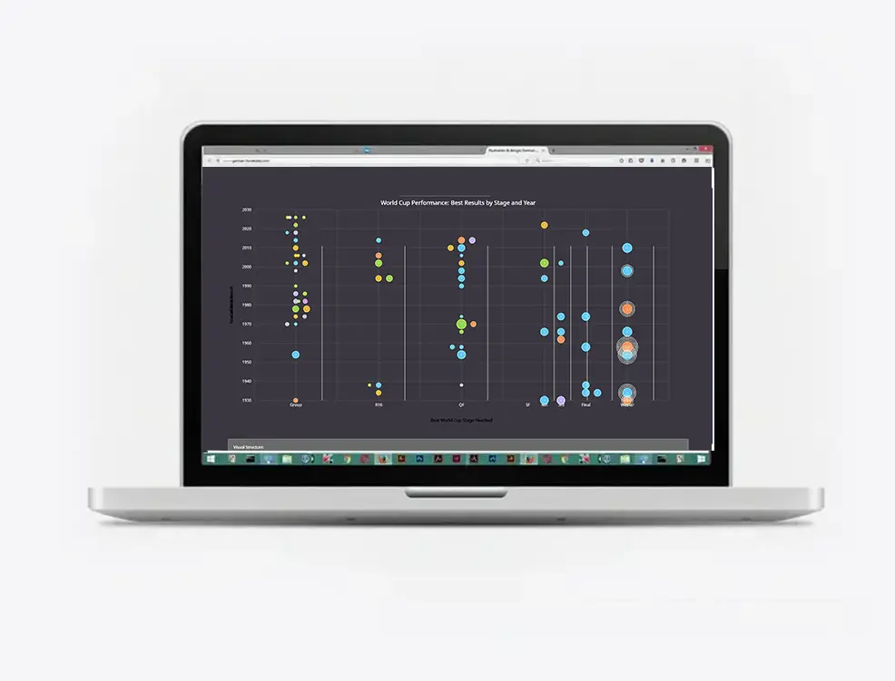
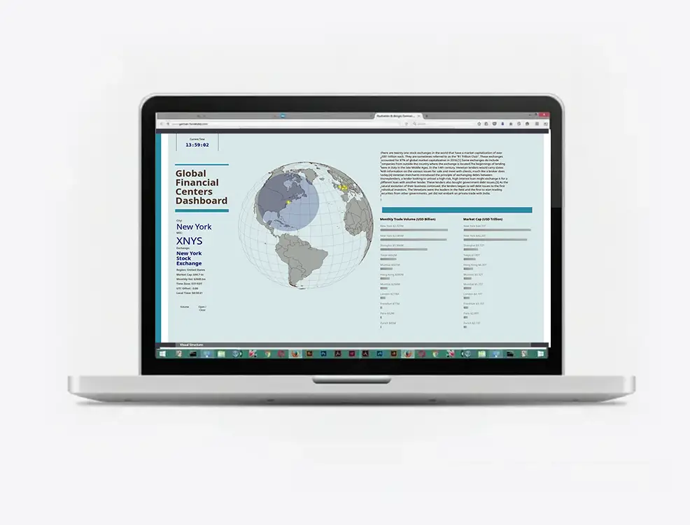
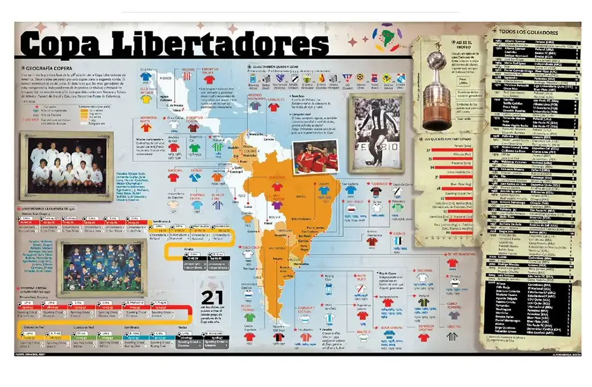
We specialize in print-focused design, including books and reports. From content structuring to refined page layouts, I ensure that every publication delivers impactful visuals and functionality, bringing ideas to life in printed form.
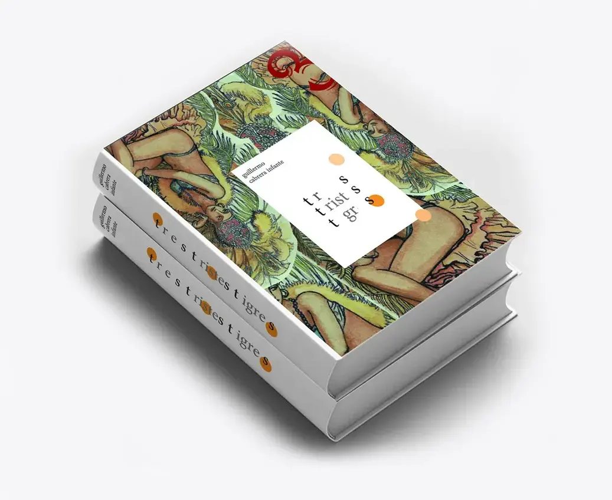
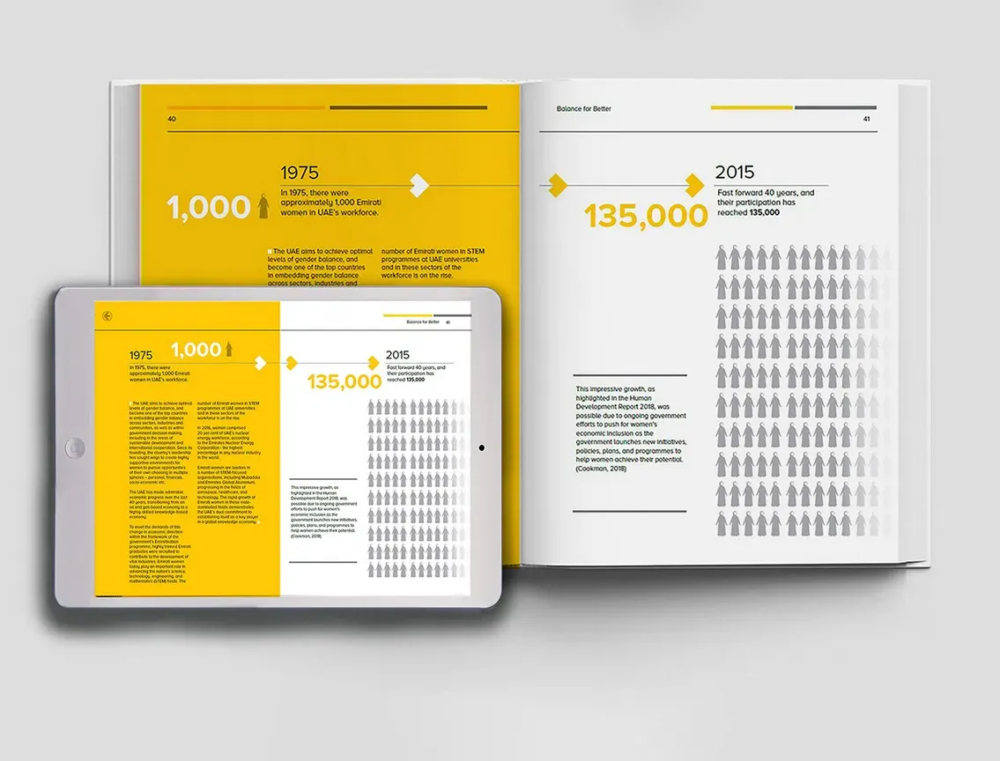
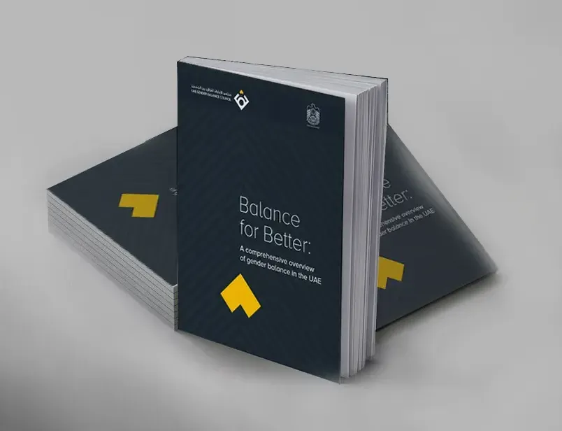
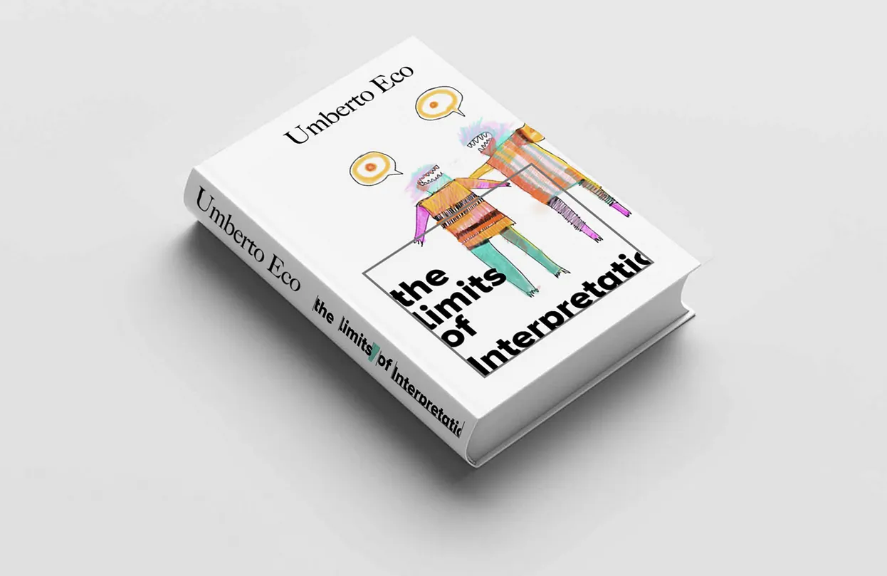
We craft custom illustrations, combining artistry with your vision. From digital to hand-drawn techniques, I co-create visuals that tell stories and inspire audiences, transforming abstract ideas into compelling images for diverse projects.
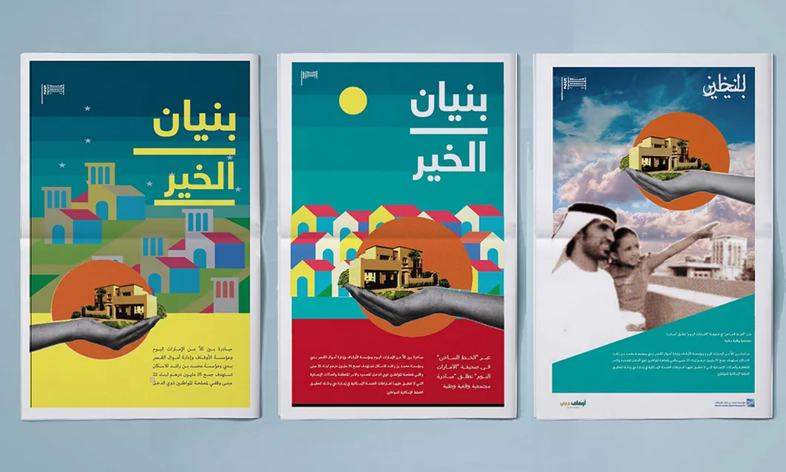
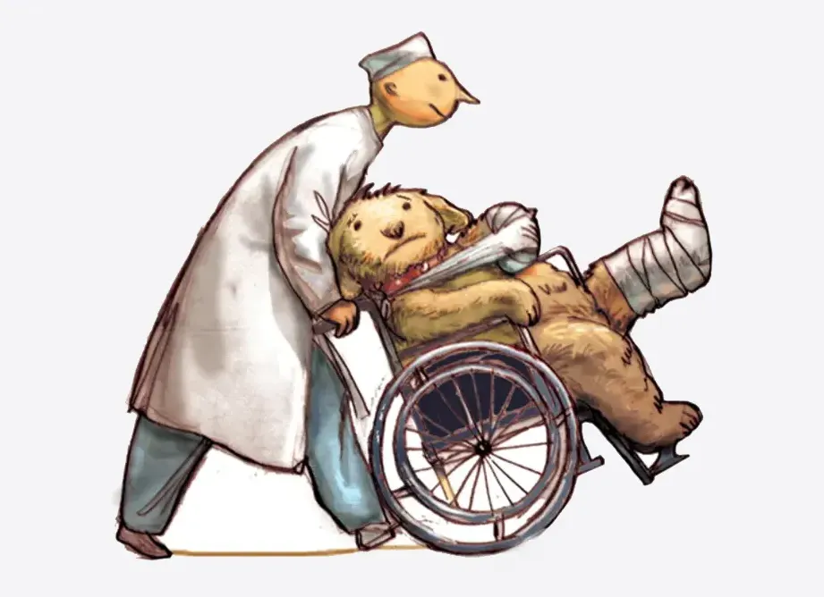
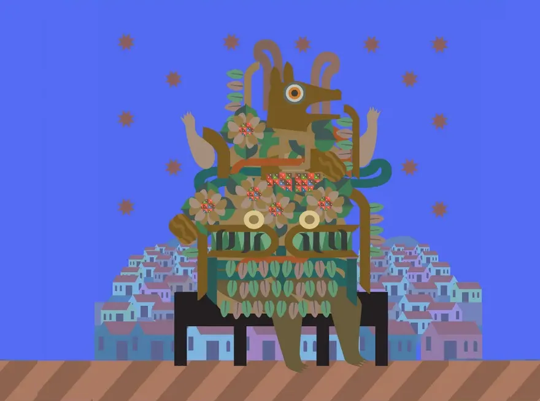
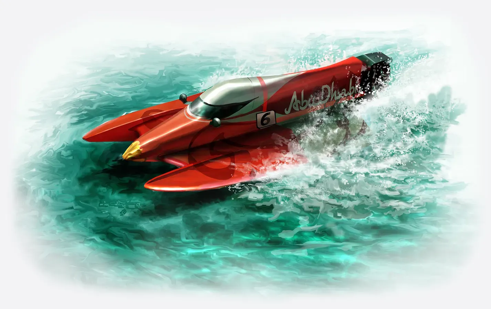
We design sleek and user-focused interfaces for websites, apps, and digital platforms. My layouts balance form and function, enhancing visual appeal and usability to elevate content for web and social media audiences.
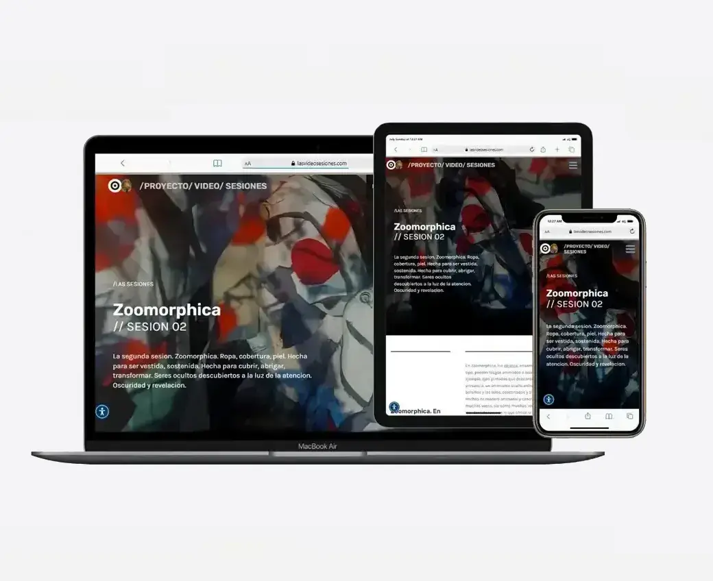
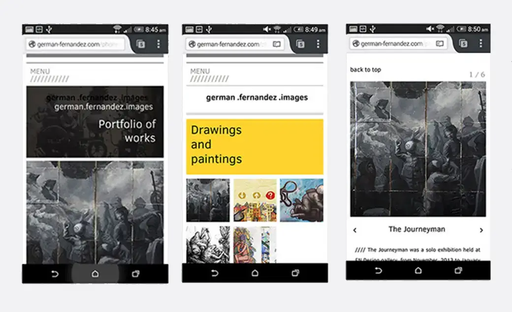
Hi. My name is German Fernandez. I am a designer with a background in
Information Graphics and editorial design for print. I am also an illustrator who works
digitaly and analogically. This is the site for commercial design-related works. You can also see my
work on behance For personal projects, visit gefercan.github.io including paintings and coding works.
For contact and communication, cv references, etc, please do not hesitate to send a message and write
to design.gefercan@outlook.com. All rights reserved.
The purpose of this site is to promote our design services. The security of your Personal Information is
important to us, but remember that no method of transmission over the Internet, or method of electronic storage,
is 100% secure. While we strive to use commercially acceptable means to protect your personal information, we
cannot guarantee its absolute security. This site is made on github.